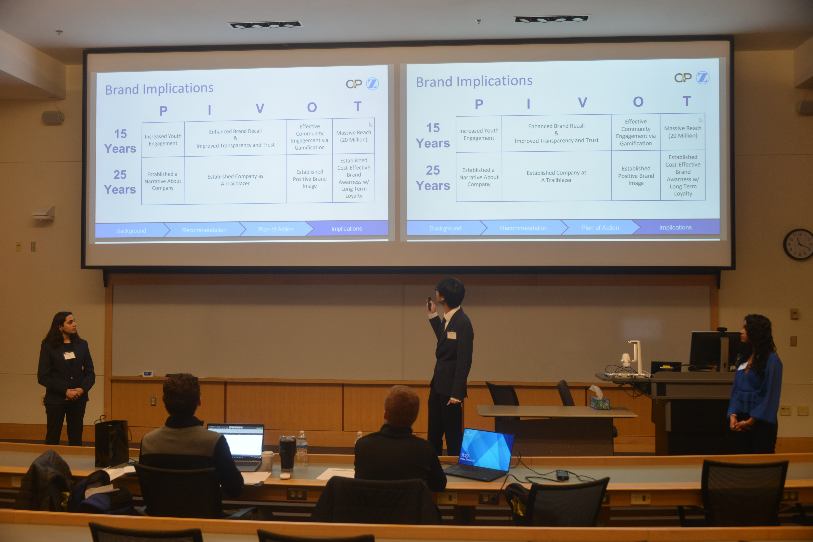
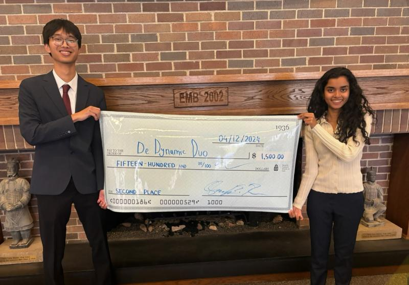

Case competitions, awards, and recognitions
Presented a modified fact-checking policy for Meta Platforms Inc. based on the philosophy of Friedrich Hayek and his book "Road to Serfdom". Competed against teams from multiple universities and demonstrated strategic thinking in policy development and corporate governance.

Constructed and presented a 3-year plan for Zimmer Biomet to increase brand awareness among the 20-40 year old demographic, including channel selection and product segment focus. Recognized for exceptional presentation skills and strategic marketing insights.

Analyzed a fictional company's accounting statements to create investment strategy for sustainable growth in an oligopolistic market. Demonstrated strong analytical skills in financial statement analysis and strategic decision-making.